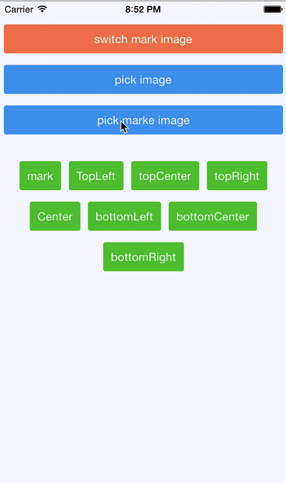
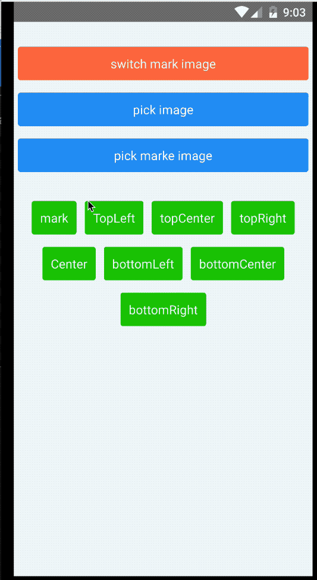
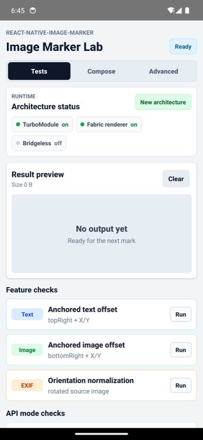
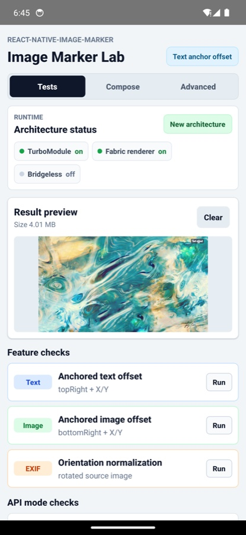
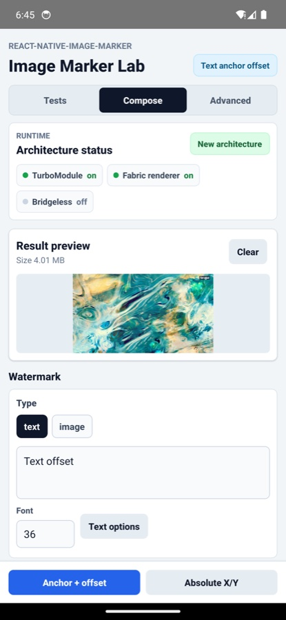
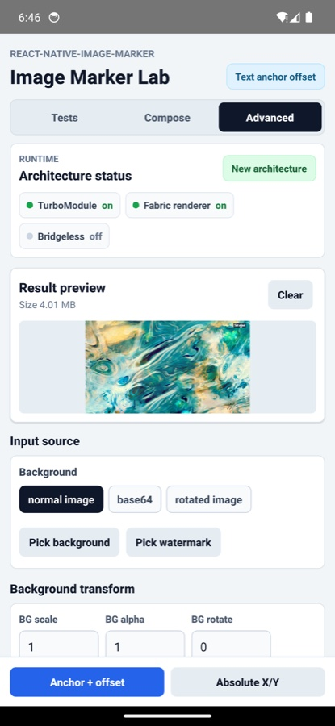

image marker for rn


- If this library is useful to you, please give me a ⭐️. 🤩
- If there is any bug, please submit an issue 🐛, or create a pull request 🤓.
- If there is any problem about using this library, please contact me, or open a QA discussion. 🤔
Table of Contents
Features


- Multiple text watermarks
- Multiple icon watermarks
- Rotating background and icon
- Setting transparency for background and icon
- Base64
- Flexible text style settings, including:
- Rotating
- Shadow
- Background color
- Italic
- Bold
- Stroke
- Text align
- Padding
- Relative position
- Background border radius
- Compatible with both Android and iOS
- React Native New Architecture support with a legacy bridge fallback
- Expo
Installation
React Native
# npm
npm install react-native-image-marker --save
# yarn
yarn add react-native-image-marker
Expo
This package includes native iOS and Android code, so it does not work in Expo Go. Use a development build, expo run:*, or EAS Build after prebuild.
# install
npx expo install react-native-image-marker
Add the package plugin entry to your Expo config, matching the Expo example in this repository:
{
"expo": {
"plugins": ["react-native-image-marker/app.plugin.js"]
}
}
Then generate and build the native projects so Expo can link the native module:
npx expo prebuild
# local native builds
npx expo run:android
npx expo run:ios
# or cloud builds
eas build
If you add the package to an existing Expo project, rebuild the native app after prebuild; reloading Expo Go or Metro is not enough for native modules.
Compatibility
| React Native Version | react-native-image-marker Version |
|---|---|
| >= 0.73.0, other cases | v1.2.0 or later |
| 0.60.0 <= rn version < 0.73.0 | v1.1.x |
| >= 0.60.0, iOS < 13, Android < N(API Level 24) | v1.0.x |
| < 0.60.0 | v0.5.2 or earlier |
Note: This table is only applicable to major versions of react-native-image-marker. Patch versions should be backwards compatible.
New Architecture
react-native-image-marker supports React Native's New Architecture in v1.3.0 and later. New Architecture apps use the generated TurboModule binding, while legacy bridge apps continue to use the existing NativeModules.ImageMarker fallback.
To verify the runtime path locally, open the example app and check the Architecture status panel:
- New architecture means both runtime signals are available.
- TurboModule on means React Native exposed
global.__turboModuleProxy. - Fabric renderer on means React Native exposed
global.nativeFabricUIManager. - Bridgeless off is acceptable; it is a separate runtime mode and does not mean the New Architecture build failed.
For local New Architecture smoke tests, run the example with the platform New Architecture flags enabled:
# Android
cd example/android
./gradlew -PnewArchEnabled=true installDebug
# iOS
cd example
RCT_NEW_ARCH_ENABLED=1 NO_FLIPPER=1 yarn pods:new-arch
RCT_NEW_ARCH_ENABLED=1 NO_FLIPPER=1 yarn ios
Fonts
react-native-image-marker does not bundle a fixed font list. The style.fontName value is resolved by the native platform:
- iOS uses
UIFont(name:size:). Use the font's registered PostScript name, and make sure custom fonts are included in the iOS app bundle. - Android uses React Native's
ReactFontManager. Use a system font family or a custom font linked into the Android app assets, usually underandroid/app/src/main/assets/fonts. - If
fontNameis omitted or cannot be resolved, the native code falls back to the platform default font.
For custom fonts, first confirm the font renders in your React Native app, then pass the same native font family or PostScript name to fontName.
Common Tasks
These are the flows most apps need first. For the full visual cookbook, see the usage guide.
Add a Text Watermark
Use markText when the watermark is text-only. Set positionOptions.position for an anchor, and use X / Y as offsets from that anchor.
import Marker, { ImageFormat, Position } from 'react-native-image-marker';
const result = await Marker.markText({
backgroundImage: { src: require('./images/background.jpg') },
watermarkTexts: [
{
text: 'Demo',
positionOptions: {
position: Position.bottomRight,
X: 24,
Y: 24,
},
style: {
color: '#ffffff',
fontSize: 32,
},
},
],
filename: 'text-watermark',
saveFormat: ImageFormat.png,
});
Add an Image Watermark
Use markImage when the watermark is an icon, logo, or any other image source.
import Marker, { ImageFormat, Position } from 'react-native-image-marker';
const result = await Marker.markImage({
backgroundImage: { src: require('./images/background.jpg') },
watermarkImages: [
{
src: require('./images/logo.png'),
position: {
position: Position.topLeft,
X: 16,
Y: 16,
},
scale: 0.5,
},
],
filename: 'image-watermark',
saveFormat: ImageFormat.png,
});
Use Base64 Input
Pass a base64 data URL or base64 string as src when your image already lives in memory or comes from an API response.
await Marker.markText({
backgroundImage: {
src: 'data:image/png;base64,iVBORw0KGgo...',
},
watermarkTexts: [
{
text: 'base64',
positionOptions: { position: Position.center },
style: { color: '#ffffff', fontSize: 28 },
},
],
});
Use a Responsive Text Size
Use fontSizeRatio when the same watermark should scale with different background image widths.
await Marker.markText({
backgroundImage: { src: require('./images/background.jpg') },
watermarkTexts: [
{
text: 'responsive',
positionOptions: { position: Position.center },
style: { color: '#ffffff', fontSizeRatio: 0.03 },
},
],
});
Run with Expo
This package includes native iOS and Android code, so Expo Go cannot load it. Use a development build, expo run:android, expo run:ios, or EAS Build. The repository also includes an Expo example that exercises the same lab UI as the React Native example.
Save the Result
The native marker call returns the generated image path. Save it with your preferred media or file library, such as CameraRoll, react-native-fs, or your own native module.
Usage Guide
API
- the latest version
- v1.1.x
- v1.0.x
- If you are using a version lower than 1.0.0, please go to v0.9.2
Save image to file
- If you want to save the new image result to the phone camera roll, just use the CameraRoll-module from react-native.
- If you want to save it to an arbitrary file path, use something like react-native-fs.
- For any more advanced needs, you can write your own (or find another) native module that would solve your use-case.
Contributors
@filipef101 @mikaello @Peretz30 @gaoxiaosong @onka13 @OrangeFlavoredColdCoffee @vioku
Examples
The examples open the same Image Marker Lab experience on both React Native and Expo. Each tab starts with the same runtime architecture status and result preview, then shows the controls for that tab. Use Tests for one-tap feature checks, Compose for common watermark settings, and Advanced for input source, background transform, output format, and quality controls. Each run writes to the result preview so you can quickly confirm the generated image instead of only checking logs.
|
Tests  |
Result preview  |
|
Compose  |
Advanced  |
React Native
The React Native example covers the full lab, including local image picking, base64 input, rotated image/orientation handling, anchored text/image offsets, position presets, and absolute-coordinate watermark placement.
The runtime status panel also helps confirm whether the app is running through the New Architecture or the legacy bridge.
If you want to run the example locally, you can do the following:
git clone git@github.com:JimmyDaddy/react-native-image-marker.git
cd ./react-native-image-marker
# install dependencies
yarn
# Android
# Open an android emulator or connect a real device at first
yarn example android
# iOS
yarn example ios
Expo
The Expo example reuses the same lab UI with Expo adapters for image picking and file-size reads. It runs as a development build and includes feature checks for base64 backgrounds, text/image offsets, position presets, and absolute-coordinate placement.
Expo development builds show the same runtime status panel as the React Native example, so you can confirm the active architecture after prebuild and native rebuilds.
If you want to run the example locally, you can do the following:
git clone git@github.com:JimmyDaddy/react-native-image-marker.git
cd ./react-native-image-marker
# Expo
# install dependencies
yarn
# install the Expo example workspace dependencies
yarn expo-example
# Android
# Open an android emulator or connect a real device at first
yarn expo-example android
# iOS
yarn expo-example ios
Contributing
See the contributing guide to learn how to contribute to the repository and the development workflow.
License
- If this library is useful to you, please give me a ⭐️. 🤩
- If there is any bug, please submit an issue 🐛, or create a pull request 🤓.
- If there is any problem about using this library, please contact me, or open a QA discussion. 🤔
Made with create-react-native-library